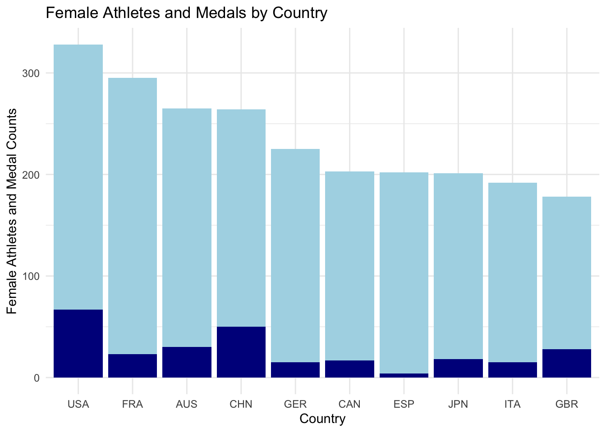
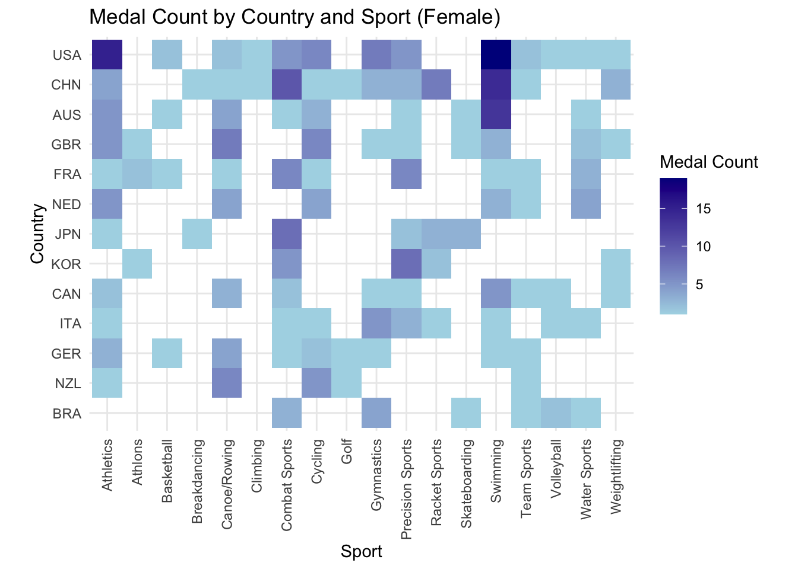

library(tidyverse)
library(hrbrthemes)
Athletes_df <- read_csv("/Users/tannerbessette/Desktop/SYE/athletes.csv")
Medals_df <- read_csv("/Users/tannerbessette/Desktop/SYE/medals.csv")2024 Summer Olympic Games Medal Project
In this project I wanted to investigate and visualize how the men’s and women’s teams for all of the countries that participated in the 2024 Olympics performed compared to each other. Specifically, I wanted to see how many male and female athletes each country sends, and how many medals different country’s male and female teams win.
For my investigation, I utilized a Kaggle dataset called “Paris 2024 Olympic Summer Games” by Petro, who has a PhD and is actively working as a data scientist at CheAI. This dataset was updated daily throughout the Olympics, and includes all of the athletes that competed, all of the events that were hosted, all of the medals that were won, the daily schedules, the sport venues, and so much more. For this project I utilized his athletes and medals datasets. The athletes dataset includes each athlete, their gender, the country they are competing for, and other facts about them. The medals dataset includes information on each gold, silver, and bronze medal that was won in each event throughout the Olympics, and the athlete/team that won each medal.
Load libraries and read in datasets:
Create male and female datasets:
Male_Athletes_df <- Athletes_df %>%
filter(gender == "Male")
Female_Athletes_df <- Athletes_df %>%
filter(gender == "Female")Total male and female medals for each sport:
Male_Total_Medal_Counts <- Medals_df %>%
filter(gender == "M") %>%
group_by(country_code) %>%
summarise(medal_totals = n())
Female_Total_Medal_Counts <- Medals_df %>%
filter(gender == "W") %>%
group_by(country_code) %>%
summarise(medal_totals = n()) Visualize the total number of male athletes by country, and fill the bars by medals won to indicate the proportion of each country’s athletes who medalled:
Male_Athletes_Count <- Male_Athletes_df %>%
group_by(country_code) %>%
summarise(athlete_count = n()) %>%
arrange(desc(athlete_count))
# join the medals counts with the athletes count
Male_Athletes_Count <- left_join(
Male_Athletes_Count, Male_Total_Medal_Counts, by = "country_code")
# Calculate max country counts and visualize the top 10 countries:
Male_Athletes_Count <- Male_Athletes_Count %>%
filter(athlete_count > 128)
# Create the plot:
Male_Athletes_Count_barplot <- ggplot(data = Male_Athletes_Count) +
geom_bar(aes(x = reorder(country_code, -athlete_count), y = athlete_count,
fill = athlete_count), stat = "identity") +
geom_bar(aes(x = reorder(country_code, -athlete_count), y = medal_totals,
fill = medal_totals), stat = "identity") +
labs(title = "Male Athletes and Medals by Country",
x = "Country",
y = "Male Athletes and Medal Counts") +
theme_minimal() +
scale_fill_viridis_c() +
theme(legend.position = "none")
print(Male_Athletes_Count_barplot)
France and USA both sent many male athletes to the Olympics, and received a lot of medals. Germany and Spain, despite sending many male athletes, received relatively few total medals. China and Great Britain sent less athletes than some other countries, but had a high proportion of their male athletes medal.
Visualize the total number of female athletes by country, and fill the bars by medals won to indicate the proportion of each country’s athletes who medalled:
Female_Athletes_Count <- Female_Athletes_df %>%
group_by(country_code) %>%
summarise(athlete_count = n()) %>%
arrange(desc(athlete_count))
# join the medals counts with the athletes count
Female_Athletes_Count <- left_join(
Female_Athletes_Count, Female_Total_Medal_Counts, by = "country_code")
# Calculate max country counts and visualize the top 10 countries:
Female_Athletes_Count <- Female_Athletes_Count %>%
filter(athlete_count > 177)
# Create the plot:
Female_Athletes_Count_barplot <- ggplot(data = Female_Athletes_Count) +
geom_bar(aes(x = reorder(country_code, -athlete_count), y = athlete_count,
fill = athlete_count), stat = "identity") +
geom_bar(aes(x = reorder(country_code, -athlete_count), y = medal_totals,
fill = medal_totals), stat = "identity") +
labs(title = "Female Athletes and Medals by Country",
x = "Country",
y = "Female Athletes and Medal Counts") +
theme_minimal() +
scale_fill_viridis_c() +
theme(legend.position = "none")
print(Female_Athletes_Count_barplot)
USA and France sent the most female athletes as well. USA and China had the highest number of their female athletes medal. Despite being seventh in the total number of female athletes that participated in the Olympics, Spain had a remarkably low proportion of their athletes receive medals.
HEATMAPS
Heatmaps provide a way to visualize where each country’s medals are coming from, and how different countries perform in different sports.
Create a Sports Category variable that groups similar sports together:
# Create new Sport_Category variable for heatmap that reduces
# the amount of categories:
Medal_Counts <- Medals_df %>%
mutate(Sport_Category = as.factor(case_when(
discipline %in% c("3x3 Basketball", "Basketball") ~ "Basketball",
discipline %in% c("Badminton", "Table Tennis", "Tennis") ~ "Racket Sports",
discipline %in% c("Boxing", "Taekwondo", "Wrestling", "Judo") ~ "Combat Sports",
discipline %in% c("Swimming", "Marathon Swimming", "Diving", "Artistic Swimming") ~
"Swimming",
discipline %in% c("Volleyball", "Beach Volleyball") ~ "Volleyball",
discipline %in% c("Cycling BMX Freestyle", "Cycling BMX Racing",
"Cycling Mountain Bike",
"Cycling Road", "Cycling Track") ~ "Cycling",
discipline %in% c("Water Polo", "Surfing", "Sailing") ~ "Water Sports",
discipline %in% c("Artistic Gymnastics", "Rhythmic Gymnastics",
"Trampoline Gymnastics") ~ "Gymnastics",
discipline == "Athletics" ~ "Athletics",
discipline %in% c("Canoe Slalom", "Canoe Sprint", "Rowing") ~ "Canoe/Rowing",
discipline == "Equestrian" ~ "Equestrian",
discipline %in% c("Football", "Handball", "Hockey", "Rugby Sevens") ~
"Team Sports",
discipline %in% c("Archery", "Shooting", "Fencing") ~ "Precision Sports",
discipline %in% c("Triathlon", "Modern Pentathlon") ~ "Athlons",
discipline == "Weightlifting" ~ "Weightlifting",
discipline == "Skateboarding" ~ "Skateboarding",
discipline == "Breaking" ~ "Breakdancing",
discipline == "Sport Climbing" ~ "Climbing",
discipline == "Golf" ~ "Golf",
TRUE ~ "Other" # default if any sport doesn't match
)))Team Sports is a vague category name, I chose that to keep the name more concise; it consists of team sports besides basketball that are played with more than 4 people, (Rugby, Football, Handball, and Hockey). The “Athlons” level contains the triathlon and Modern Pentathlon.
Heatmap for Medals:
# group by our new Sport_Category variable before counting number of medals
Medal_Counts <- Medal_Counts %>%
group_by(country_code, Sport_Category) %>%
mutate(count = n()) %>%
arrange(desc(count))
# Only keep countries who got at least 10 total medals:
# (because heatmap was getting sloppy)
Medal_Counts <- Medal_Counts %>%
group_by(country_code) %>%
mutate(total_count = n()) %>%
filter(total_count >= 10)
# Heatmap
ggplot(Medal_Counts, aes(x = Sport_Category,
y = fct_reorder(country_code, total_count),
fill= count)) +
geom_tile() +
labs(title = "Medal Count by Country and Sport",
x = "Sport",
y = "Country") +
theme_minimal() +
theme(axis.text.x = element_text(angle = 90, vjust = 0.5, hjust=1)) +
scale_fill_gradient(low="white", high="blue", name = "Medal Count") +
coord_fixed()It appears that there is a wide variety of countries who medalled in athletics and in combat sports. All of the countries who had the most overall medals also have a significant number of medals in swimming, likely because there are so many available medals to win in swimming. A country that stands out in the plot is Kenya - they are one of the strongest performers in the whole world in athletics, yet they didn’t obtain a single medal in any other sports!
Now, let’s split up the heatmap between men and women:
Men’s Medal Heatmap:
# Only keep countries who got at least 10 total medals:
# (because heatmap was getting sloppy)
# group by our new Sport_Category variable before counting number of medals
Male_Medal_Counts <- Medal_Counts %>%
filter(gender == "M") %>%
group_by(country_code, Sport_Category) %>%
mutate(count = n()) %>%
arrange(desc(count))
Male_Medal_Counts <- Male_Medal_Counts %>%
group_by(country_code) %>%
mutate(total_count = n()) %>%
filter(total_count >= 10)
# Heatmap
ggplot(Male_Medal_Counts, aes(x = Sport_Category,
y = reorder(country_code, total_count),
fill= count)) +
geom_tile() +
labs(title = "Medal Count by Country and Sport (Male)",
x = "Sport",
y = "Country") +
theme_minimal() +
theme(axis.text.x = element_text(angle = 90, vjust = 0.5, hjust=1)) +
scale_fill_gradient(low="white", high="blue", name = "Medal Count") +
coord_fixed()
Similarly to Kenya with athletics, Iran received zero medals in all other sports, but they performed very strongly in combat sports, getting some of the most male combat sport medals of any country.
USA received a huge majority of their male medals from athletics. Combat sports, swimming, and canoe/rowing had a wide spread of countries perform well, without just one or two obvious countries dominating a huge majority of those medals.
Women’s Medal Heatmap:
# Only keep countries who got at least 10 total medals:
# (because heatmap was getting sloppy)
# group by our new Sport_Category variable before counting number of medals
Female_Medal_Counts <- Medal_Counts %>%
filter(gender == "W") %>%
group_by(country_code, Sport_Category) %>%
mutate(count = n()) %>%
arrange(desc(count))
Female_Medal_Counts <- Female_Medal_Counts %>%
group_by(country_code) %>%
mutate(total_count = n()) %>%
filter(total_count >= 10)
# Heatmap
ggplot(Female_Medal_Counts, aes(x = Sport_Category,
y = reorder(country_code, total_count),
fill= count)) +
geom_tile() +
labs(title = "Medal Count by Country and Sport (Female)",
x = "Sport",
y = "Country") +
theme_minimal() +
theme(axis.text.x = element_text(angle = 90, vjust = 0.5, hjust=1)) +
scale_fill_gradient(low="white", high="blue", name = "Medal Count") +
coord_fixed()
The USA women clearly received far more medals than any other country’s women’s teams did. They were especially dominant in swimming, with China and Australia being the only other countries who even came close, and a big drop off after them.
An overall takeaway from the heatmaps is that the countries that tend to get the most overall medals tend to get some medals from almost every sport, and tend to do especially well in swimming and athletics, where there are the most medals up for grabs.